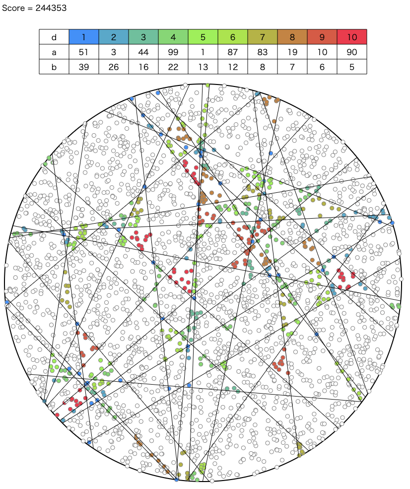

AtCoder Heuristic Contest 012¶

問題概要¶
- 円形のケーキの上にN個のイチゴが乗っている
- 高々K(=100)回の直線でケーキをカットできる
- d(=1～10)個のイチゴが乗っているケーキが欲しい人がa人いるという情報が与えられるので、できるだけ多くの人に割り振られるようにカットせよ
- 条件を満たさないケーキは割り振ることができない
時間¶
240分
個人的メモ¶
- 方針選択、スコア計算の高速化、が難しい問題
- 実装難易度も含めて判断
- ざっくり、「縦横の直線のみに限定して、直線を調整する焼きなまし」が強かった模様
- ただし、同じ方針でも、差分計算や評価関数など細かい違いで結構差がでていた模様
- 山登り/焼きなまし以外の方針だと、のpotato167さんがDP解、のchokudaiさんがchokudaiサーチで最適化
形を決め打つ¶
- 形を決め打つ場合、解空間の部分空間しか探索しないことになるので、探索領域を小さくできるメリットがあるが、そこに最適解(または良い解)がないとどんなに最適化を頑張ってもスコアがでない危険性があり、慎重になってしまう
- 縦横のみに限定する
- 必ず中心を通る直線にする
- 特定の模様になるようにする
- など
- ただ今回は、斜め直線を扱うと実装難易度が上がることと、4時間コンというのもあり、実装の面からも「縦横のみに限定」を選択しやすかったかも
- どのぐらいうまくいきそうかを見積もるのは難しいかも
- ただやってみると、スコア自体もだいたい9割以上は取れる、結果的に上位は99%以上まで取れてる方針で、当たり方針だった
イチゴをすべて使う(直線で潰さない)テク¶
- 今回の設定では、イチゴの数はぴったり分しかないので、無駄にできるイチゴはない
- 縦横直線でも、微妙にずらしてカットすることで、線上で無駄になるイチゴをなくすことができる
- (x,-1e7)と(x+1,1e7)を通る直線、のような感じ
縦横の棒の数¶
- 均等に分けるか、どちらかを多くするか、がありえる
- 上位は均等に分けている人が多そう？だけど、コンテスト後のupsolveで9:1ぐらいに分けたらスコアが伸びている人がそこそこいそう
- https://twitter.com/Shun___PI/status/1543540127452246017
- また、100本全部使わないほうが良い場合もあるっぽい？
- 必要な領域数を見積もる、試して一番良さそうな本数を選ぶ、など
近傍¶
- 直線を調整する
- 直線を入れる
- 直線を消す
- 直線をずらす
- 1ずつだと最終的に重なりやすい？ある程度の移動量をランダムに選んだほうがよいかも
- https://twitter.com/wata_orz/status/1544854464409903105
- (直線をランダム位置に移動)
- 斜めを許容する場合
- 直線を回転
スコア計算・評価関数¶
- 任意直線(斜め直線を許容)の場合のスコア計算はテスターにある
- イチゴが直線の右側か左側かを判定して、集合を繰り返し分けていく方法
- ただ、この方法は結構重い
- ここの高速化は必須だった
スコア計算の高速化、差分計算¶
- 「縦横のみ」にした場合は、より効率的な計算が可能
- 単純に、y軸をソートして、その横線でできる各領域内でx軸ソートするような感じにすれば同じ集合を何度も分割しないで計算できる
- が、これでも毎回計算してると遅い
- 自分の場合は、6000回程度しかイテレーションが回せなかった
- 差分計算が可能で、ある直線を変化させる場合、その直線の両側の領域だけが変化するので、これを高速に計算できれば良い
- 座圧した二次元累積和を前計算しておくと、ある直線の両側にある直線までの間と、反対の軸側の直線との長方形の領域のイチゴをO(1)で求められるので、更新はO(K)程度で可能になる
- イチゴをすべて使うテクだと、各軸でイチゴの位置だけの個数だけの要素数になるので、二次元累積和の大きさも5500^2個程度で済む
- これを使わないと、無駄にするイチゴが増えたり、両隣に1ずれた位置とか、潰したイチゴとかも考える必要がでて計算がややこしくなる
- その他、二分探索、ハッシュ値+unordered_map、なども
- 座圧した二次元累積和を前計算しておくと、ある直線の両側にある直線までの間と、反対の軸側の直線との長方形の領域のイチゴをO(1)で求められるので、更新はO(K)程度で可能になる
- 差分計算までできると、かなりイテレーション回数が稼げる(1M回以上は回せる)
他の評価関数¶
- 元のスコア計算式は、期待値を超えててもペナルティがない
- また、上記のアプローチだと、dが小さい方ができやすい傾向がある
- なので、期待値との差の二乗や、dで重み付け(ボーナス)したもの、などを評価関数として最適化
その他¶
- 初期解
- 差分計算までできていれば十分なイテレーション回数があるので、あまり依存はしなそう
- 均等分割とか、DP解とか
- 最後の微調整に斜め直線を許す
解説¶
(50位まで&発言を見つけられた方のみ)
- Aquariusさん (99.9%解)
- assyさん
- potato167さん
- yokozuna57さん
- Psyhoさん
- tomerunさん
- phocomさん
- monnuさん
- terry_u16さん
- kusanoさん
- heno239さん
- Yu_212さん
- komori3さん
- iwashi31さん
- sumoooruさん
- Shun_PIさん
- takumi152さん
- shindanninさん
- wanuiさん
- tute7627さん
- Denteさん
- nesyaさん
- hitoareさん
- chokudai社長
- cottoncottonさん
- iaNTUさん
- https://twitter.com/iaNTU_/status/1543535681439289346
- https://twitter.com/iaNTU_/status/1543536423751467008
- https://twitter.com/iaNTU_/status/1543537471014576128
- https://twitter.com/iaNTU_/status/1543555099116507136
- https://twitter.com/iaNTU_/status/1543564649395736576
- https://twitter.com/iaNTU_/status/1543565545307377664
- yunixさん
- nahco314さん
- Shibungiさん
- riantkbさん
- https://twitter.com/rian_tkb/status/1543536396815589377
- https://twitter.com/rian_tkb/status/1543535949493071872
- https://twitter.com/rian_tkb/status/1543538385775603712
- https://twitter.com/rian_tkb/status/1543538703275941889
- https://twitter.com/rian_tkb/status/1543545582630801408
- https://twitter.com/rian_tkb/status/1543545014160019456
- fuppy0716さん
- shibh308さん
- takytankさん
- kensさん
- dsytk7さん
- plcherrimさん